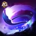
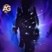
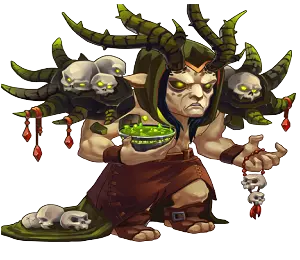
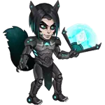
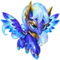

Um inimigo é lançado ao ar, e K'arkh de repente transforma a habilidade de controle de um aliado em um golpe devastador. É esse momento que quero que você entenda antes de gastar seus recursos. Em Hero Wars: Dominion Era, o dano dele vem da construção de um time que continua lançando inimigos ao ar enquanto ele permanece vivo para puni-los.
Meu ponto de partida é simples: fortalecer Tentáculos Mortais, dar ao dano físico dele Penetração de Armadura suficiente e protegê-lo até o combo começar. Vou explicar suas habilidades, ascensões, skins, glifos, artefatos, pets, counters, bandeiras de guerra e dois times, incluindo a parceria com Wodryn que funcionou bem nos meus testes.


📋 Sumário de K'arkh
Quem é K'arkh em Hero Wars: Dominion Era?
K'arkh é um Guerreiro baseado em Agilidade que luta na linha de frente. Sua mecânica característica é Tentáculos Mortais: enquanto está vivo, ele ataca inimigos lançados ao ar, incluindo os lançamentos provocados por aliados. Isso torna Kai, Faceless e Wodryn parceiros valiosos. Eu o trato como o principal causador de dano físico, que precisa de proteção e lançamentos ao ar coordenados.

- Função principal: Guerreiro
- Atributo principal: Agilidade
- Posição: Linha de frente
- Patronagem compatível: Fenris, Mara, Vex
- Pedras da Alma: Baús de Almas, Átrio das Almas, Loja do Torneio dos Elementos
Ataque básico: 107.314 de dano físico (100% do Ataque Físico) antes da mitigação inimiga, com um tempo de recarga base informado de 5,2 segundos.
Avaliação geral de K'arkh no meta
Estas são minhas avaliações de build e confrontos, com base no controle, no potencial de dano, na sinergia e na dependência de aliados. São avaliações editoriais, e não um ranking baseado em taxas de vitória medidas.
- Controle: ★★★★☆ — três alvos com pouca Vida podem ser lançados ao ar e atordoados.
- Dano: ★★★★★ — excelente potencial de dano explosivo quando os lançamentos funcionam e as defesas físicas são superadas.
- Sinergia: ★★★★★ — os lançamentos ao ar dos aliados alimentam diretamente o dano da passiva.
- Independência: ★★☆☆☆ — proteção, lançamentos ao ar e escolha dos confrontos influenciam bastante seus resultados.
Atributos máximos de K'arkh — Hero Wars: Dominion Era
Estes valores de referência de uma build maximizada são apresentados sem bônus temporários de batalha ou bônus de patronagem dos pets. Eles descrevem uma build completa, e não os atributos que um iniciante precisa ter antes de usá-lo.
| Atributo | Valor | Atributo | Valor |
|---|---|---|---|
| Inteligência | Agilidade | ||
| Força | Vida | ||
| Ataque Físico | Ataque Mágico | ||
| Armadura | 49.217 | Defesa Mágica | |
| Penetração de Armadura | Precisão | ||
| Resistência a Críticos | Poder |
Prós e contras de K'arkh — Hero Wars: Web e Facebook
✅ Prós
- Transforma os próprios lançamentos ao ar e os dos aliados em dano físico por meio de Tentáculos Mortais.
- Ataques com dano dobrado contra alvos que atendem à condição de nível da passiva criam um forte potencial de dano explosivo.
- Nexo do Horror pressiona os três inimigos com menos Vida, dando ao time uma forma de finalizar alvos vulneráveis.
- Negador das Leis combina bloqueio físico com energia extra, e Fator de Sobrevivência recompensa os acertos contra inimigos no ar com cura.
- O Ataque Físico melhora seu dano principal e também contribui para as fórmulas dos efeitos de ascensão posteriores.
❌ Contras
- Ele precisa sobreviver para ativar Tentáculos Mortais; uma build com muito dano não ajuda depois que ele cai.
- A prevenção de lançamentos ao ar pode interromper tanto seu dano quanto a cura associada aos ataques contra inimigos no ar.
- Seu dano físico precisa de Penetração de Armadura suficiente contra adversários com muita Armadura.
- O bloqueio físico da fenda é temporário e depende de chance; ele não oferece proteção geral contra dano mágico.
- Efeitos que dependem do nível, bloqueio de ganho de energia e bloqueio de cura podem tornar o combo menos confiável.
- As melhorias de ascensão chegam mais tarde e não devem substituir o investimento no conjunto básico de quatro habilidades.
Prioridade de evolução das habilidades de K'arkh — Hero Wars: Dominion Era
Entenda como K'arkh transforma lançamentos ao ar em dano, quais habilidades merecem seu ouro primeiro e como as ascensões posteriores melhoram a pressão e a sobrevivência.
Minha ordem de evolução para iniciantes: Tentáculos Mortais → Nexo do Horror → Negador das Leis → Fator de Sobrevivência. Mantenha as habilidades que dependem do nível próximas ao nível dos inimigos que você enfrenta. Os blocos abaixo seguem a ordem do jogo, e as prioridades se aplicam antes do desbloqueio das ascensões.

1ª habilidade — Nexo do Horror (Nexus of Horror)
Descrição no jogo: K'arkh lança ao ar os três inimigos com menos Vida. Quando os inimigos afetados caem de volta ao chão, ficam atordoados por 2 segundos. A chance de atordoar diminui se o nível do alvo for superior a 130.

Explicação da habilidade: Esta habilidade suprema provoca o lançamento ao ar e um atordoamento de 2 segundos. A suprema básica não tem fórmula de dano direto; Tentáculos Mortais fornece o ataque seguinte de 107.314 de dano físico por alvo, ou 214.628 quando a condição de dano dobrado se aplica. Pense em Nexo como a preparação e na passiva como o golpe. Esses são valores de referência antes da mitigação, e não uma quantidade garantida de Vida removida.
Efeito: 3 alvos com menos Vida; atordoamento de 2 segundos ao cair. O limite de nível informado para o atordoamento é 130.
Prioridade de evolução: Muito alta — Mantenha seu nível competitivo para que o atordoamento continue confiável. Ela inicia seu próprio combo de lançamento ao ar, mas Tentáculos Mortais é o primeiro investimento em dano porque também funciona com lançamentos dos aliados.
Informações da animação da habilidade
- Tipo: Suprema
- Alvos: 3
- Duração do atordoamento: 2 segundos
Eco do Horror (Echo of Horror) — Ascensão de categoria II
Efeito da ascensão: Depois de Nexo do Horror, surge uma área sob o inimigo com menos Vida, causando dano a cada segundo durante 8 segundos. Na terceira melhoria, o inimigo mais próximo do centro é lançado ao ar quando a área desaparece.

Explicação da habilidade: A melhoria adiciona pressão contínua após o lançamento inicial. Ela começa com 6.029 de dano por segundo (4,5% do Ataque Físico + 1.200), depois aumenta para 8.039 (6% do Ataque Físico + 1.600) e 10.156 (7,6% do Ataque Físico + 2.000). A última melhoria mantém 10.156 por segundo e adiciona o lançamento final, que pode ativar Tentáculos Mortais enquanto K'arkh estiver vivo. O atributo usado na fórmula é o Ataque Físico; o texto do efeito fornecido não identifica explicitamente o tipo de dano da área.
Por que isso importa mais tarde: Ela adiciona uma segunda oportunidade de lançar um inimigo ao ar, mas primeiro você precisa desbloquear a ascensão e adquirir sua melhoria final. Não planeje um time de início de jogo como se esse lançamento extra já estivesse disponível.

2ª habilidade — Negador das Leis (Negator of Laws)
Descrição no jogo: K'arkh abre uma fenda interdimensional que pode bloquear ataques físicos inimigos durante 8 segundos. Ele recebe energia extra por cada ataque bloqueado.

Explicação da habilidade: Durante 8 segundos, cada ataque físico recebido que pode ser bloqueado tem 52% de chance de bloqueio. Um bloqueio bem-sucedido também fornece 15,5% de energia extra, ajudando K'arkh a alcançar outra suprema. Este é um efeito defensivo e de energia, sem fórmula de dano direto. O bloqueio não é garantido e não transforma ataques mágicos em ataques físicos que podem ser bloqueados.
Fórmula da chance de bloqueio: 52% (0,2 × nível da habilidade + 26).
Fórmula da energia extra: 15,5% (0,05 × nível da habilidade + 9).
Prioridade de evolução: Alta — Mais bloqueios ajudam na sobrevivência e criam mais chances de ganhar energia extra. Eu a coloco depois das habilidades de lançamento ao ar e dano, mas aumento sua prioridade se ataques físicos o matarem antes do primeiro combo útil.
Informações da animação da habilidade
- Tipo: Periódica
- Tempo de recarga: 18 segundos
- Duração: 8 segundos
3ª habilidade — Tentáculos Mortais (Deadly Tendrils)
Descrição no jogo: Enquanto K'arkh estiver vivo, ele ataca todos os inimigos lançados ao ar. Se o nível do inimigo for igual ou inferior a 130, ele causa dano dobrado. A chance de causar dano dobrado diminui se o nível do alvo for superior a 130.

Explicação da habilidade: Cada lançamento de um inimigo ao ar que funciona dá a K'arkh um alvo para esta passiva, seja ele provocado por Nexo, Faceless, Kai ou Wodryn. Cada golpe causa 107.314 de dano físico (100% do Ataque Físico). Contra um inimigo que atende à condição de nível, isso passa a ser 214.628 de dano físico (200% do Ataque Físico) antes da mitigação. Portanto, um lançamento de três alvos que atende às condições representa 643.884 de dano físico bruto total, distribuído entre esses três alvos.
Fórmula do dano: 107.314 (100% do Ataque Físico); golpe dobrado: 214.628 (2 × 107.314).
Prioridade de evolução: Muito alta — Esta é minha primeira prioridade porque transforma cada lançamento ao ar dos aliados em dano. Sua condição de nível torna o investimento na habilidade importante, mesmo que a fórmula de ataque apresentada dependa do Ataque Físico.
Informações da animação da habilidade
- Tipo: Passiva
- Condição de ativação: Um inimigo é lançado ao ar enquanto K'arkh está vivo
- Limite de nível para o dano dobrado: 130 no nível de habilidade informado
4ª habilidade — Fator de Sobrevivência (Survival Factor)
Descrição no jogo: Ataques contra inimigos lançados ao ar curam K'arkh em uma fração do dano causado.

Explicação da habilidade: K'arkh recupera 27,5% do dano causado pelos ataques correspondentes contra inimigos no ar. A habilidade não causa dano separado. Se um golpe contra um inimigo no ar realmente causar 100.000 de dano físico, a recuperação base será de 27.500 de Vida, antes dos modificadores de cura. A Armadura inimiga pode reduzir o dano que alimenta essa cura, e o bloqueio de cura pode reduzir a recuperação.
Fórmula da cura: 27,5% (0,25 × nível da habilidade − 5) do dano causado.
Prioridade de evolução: Média-alta — O dano confiável contra inimigos no ar deve vir primeiro, porque esta cura precisa de dano para funcionar. Melhore-a depois do combo principal; aumente sua prioridade prática se K'arkh sobreviver à abertura, mas não conseguir se recuperar entre os lançamentos.
Abismo Imortal (Immortal Abyss) — Ascensão de categoria V
Efeito da ascensão: O desbloqueio inicial adiciona 5% de cura adicional sobre o dano causado; as melhorias aumentam esse adicional para 7% e depois 10%. A melhoria final também oferece uma fuga única quando a Vida de K'arkh fica abaixo de 20% de Vida: ele entra no abismo durante 2 segundos, evita ataques inimigos e restaura 100.486 de Vida (75% do Ataque Físico + 20.000).

Explicação da habilidade: O adicional de cura fortalece o ciclo de recuperação, enquanto a fuga final pode dar tempo para outro combo. Com a taxa base informada, um adicional de 10 pontos percentuais significa 37,5% de cura (27,5% + 10%). A cura separada da fuga depende do Ataque Físico e só pode ser ativada uma vez por batalha. Sua fórmula resulta em 100.485,5 com 107.314 de Ataque Físico, apresentado como 100.486.
Por que isso importa mais tarde: Esta é uma proteção de progressão avançada na categoria V. Até que sua melhoria final seja desbloqueada, use um tanque e habilidades de suporte para cobrir a abertura; a habilidade básica Fator de Sobrevivência não inclui a fuga.
Melhor skin para K'arkh — Hero Wars: Dominion Era
Escolha as skins de K'arkh pelos problemas que elas resolvem: faça o dano físico superar a Armadura, melhore os golpes dos tentáculos e depois cubra as ameaças que o matam.
Minha ordem geral de skins: Estelar → Celestial / Máscaras → Padrão → defesas para o confronto. Celestial e Máscaras oferecem o mesmo bônus de atributo informado, então qualquer uma pode ser sua primeira skin de Ataque Físico. Melhore a Padrão junto com elas quando seu custo total menor couber nos seus recursos. Os bônus das skins se acumulam depois do desbloqueio; a aparência é uma escolha cosmética.
Skin Padrão
Ganho de atributos: Agilidade +1.365
- Ataque Físico proveniente da Agilidade: +4.095
- Armadura proveniente da Agilidade: +1.365
Cada ponto de Agilidade concede 2 de Ataque Físico e 1 de Armadura, além de mais 1 de Ataque Físico porque Agilidade é o atributo principal de K'arkh.
Prioridade de evolução: Alta — Uma melhoria mista eficiente: como atributo principal dele, a Agilidade adiciona dano e Armadura. Ela é útil no início, enquanto skins de Ataque Físico direto oferecem um aumento final de dano maior.
Total de Pedras de Skin de Agilidade para o nível máximo:  30.825.
30.825.
Skin Estelar
Ganho de atributos: Penetração de Armadura +10.650
Prioridade de evolução: Muito alta — Meu primeiro objetivo ofensivo contra inimigos com muita Armadura. Golpes mais fortes dos tentáculos significam pouco se a Armadura os absorver. Depois que você já penetra a Armadura do alvo pretendido, Ataque Físico extra se torna mais útil.
Total de Pedras de Skin de Agilidade para o nível máximo:  55.410.
55.410.
Skin Profundezas Sombrias
Ganho de atributos: Defesa Mágica +10.650
Prioridade de evolução: Baixa — Uma defesa para confrontos específicos, em vez de uma melhoria de dano. Aumente sua prioridade se a pressão mágica for o motivo de ele cair; ela não melhora a chance de bloqueio físico.
Total de Pedras de Skin de Agilidade para o nível máximo:  55.410.
55.410.
Skin Celestial
Ganho de atributos: Ataque Físico +7.095
Prioridade de evolução: Alta — Fortalece diretamente os ataques básicos e Tentáculos Mortais, o que também pode aumentar o dano que alimenta Fator de Sobrevivência. Ela também contribui para as duas fórmulas de ascensão.
Total de Pedras de Skin de Agilidade para o nível máximo:  55.410.
55.410.
Skin de Máscaras
Ganho de atributos: Ataque Físico +7.095
Prioridade de evolução: Alta — Tem o mesmo bônus informado e a mesma finalidade da Celestial. Desenvolva a que estiver disponível primeiro e depois adicione a outra quando sua Penetração de Armadura for suficiente.
Total de Pedras de Skin de Agilidade para o nível máximo:  55.410.
55.410.
Skin Solar
Ganho de atributos: Armadura +10.650
Prioridade de evolução: Média — Ajuda a sobreviver a ataques físicos fora da fenda ou quando um bloqueio falha. Priorize-a mais cedo quando o dano físico explosivo impedir o combo inicial.
Total de Pedras de Skin de Agilidade para o nível máximo:  55.410.
55.410.
Skin de Inverno
Ganho de atributos: Defesa Mágica +21.300
Prioridade de evolução: Média — Um bônus informado de Defesa Mágica maior para confrontos mágicos difíceis. Ela não é um primeiro investimento universal; considere o acesso e o custo de evolução antes de comparar seu valor com Profundezas Sombrias.
Total de Pedras de Skin de Agilidade para o nível máximo:  110.520.
110.520.
Prioridade de evolução dos glifos de K'arkh
Gaste recursos de glifos onde K'arkh mais ganha: Penetração de Armadura e Ataque Físico vêm primeiro, enquanto Vida e Armadura ajudam a mantê-lo vivo por tempo suficiente para atacar.
Minha ordem geral de glifos: Penetração de Armadura → Ataque Físico → Agilidade → Vida → Armadura. Se ele morrer antes de atacar, corrija primeiro o problema defensivo que o impede de sobreviver. A ordem visual abaixo corresponde à do jogo.

1º glifo — Vida
Ganho de atributos: Vida +62.200
Prioridade de evolução: Média-alta — Uma reserva de Vida maior ajuda a alcançar o primeiro combo e dá espaço para a cura funcionar. Coloque-a à frente do dano quando mortes precoces forem o problema.

2º glifo — Agilidade
Ganho de atributos: Agilidade +1.135
Prioridade de evolução: Alta — Fornece +3.405 de Ataque Físico e +1.135 de Armadura para este herói de Agilidade, combinando ataque e um ganho defensivo útil.
Conversão da Agilidade: 1.135 × 3 = +3.405 de Ataque Físico; 1.135 × 1 = +1.135 de Armadura.

3º glifo — Ataque Físico
Ganho de atributos: Ataque Físico +4.340
Prioridade de evolução: Muito alta — Melhora diretamente Tentáculos Mortais e os ataques básicos. Também aumenta o dano bruto que pode alimentar a cura dos ataques contra inimigos no ar.
4º glifo — Armadura
Ganho de atributos: Armadura +6.500
Prioridade de evolução: Média — Útil contra pressão física quando a fenda está indisponível ou falha em bloquear. Não pode substituir a Defesa Mágica contra ameaças mágicas.

5º glifo — Penetração de Armadura
Ganho de atributos: Penetração de Armadura +6.500
Prioridade de evolução: Muito alta — Meu primeiro glifo de dano contra alvos com muita Armadura porque ajuda os golpes físicos a alcançar seu potencial. Passe a dar mais ênfase ao Ataque Físico quando a Armadura do alvo já estiver coberta.
Prioridade de evolução dos artefatos de K'arkh — Hero Wars: Dominion Era
Desenvolva os artefatos de K'arkh para obter dano físico confiável: o livro fornece penetração, a arma fortalece o time e o anel adiciona Agilidade útil.
Minha ordem geral de artefatos: Fólio do Alquimista → Essência de K'arkh → Anel da Agilidade. Compare a confiabilidade de ativação da arma com o valor permanente do livro; seus recursos de evolução e a progressão de estrelas são considerações separadas.

Artefato de arma — Essência de K'arkh
Ganho de atributos na ativação: Ataque Físico +33.459 para o time durante 9 segundos.
Usar Nexo do Horror pode ativar o bônus da arma. Sua chance de ativação depende da evolução do artefato; trate o bônus apresentado como um efeito temporário de combate, e não como Ataque Físico permanente na ficha do personagem.
Prioridade de evolução: Alta — Fortalece o dano físico do time durante a janela da suprema, incluindo golpes adicionais dos tentáculos enquanto o bônus estiver ativo. Desenvolva a confiabilidade de ativação e depois invista no bônus de atributo sem negligenciar a penetração do próprio herói.

Artefato de livro — Fólio do Alquimista
Ganho permanente de atributos: Ataque Físico +5.577 e Penetração de Armadura +16.731.
Prioridade de evolução: Muito alta — Meu primeiro investimento em dano contínuo: ambos os atributos ajudam o principal causador de dano físico a cumprir sua função, e a penetração é especialmente valiosa contra alvos com muita Armadura.

Artefato de anel — Anel da Agilidade
Ganho de atributos: Agilidade +6.249
- Ataque Físico proveniente da Agilidade: +18.747
- Armadura proveniente da Agilidade: +6.249
Prioridade de evolução: Média-alta — Um aumento permanente de dano considerável, com Armadura como bônus. Costumo desenvolvê-lo depois de estabelecer a penetração do livro e a utilidade da arma para o time.
Melhor patronagem para K'arkh
Compare os três patronos compatíveis com K'arkh: Fenris para uma build física equilibrada, Vex para pressão de dano compartilhada e Mara para controle mais duradouro.
Minha classificação padrão é Fenris → Vex → Mara para um time construído em torno de K'arkh como principal causador de dano. Esta recomendação depende do confronto. Um patrono é atribuído a um herói; o pet ativo do time é uma escolha separada.
1º lugar — Fenris

Fenris: Ataque Físico e Penetração de Armadura fortalecem seus golpes principais. Fúria Cega dá aos ataques básicos 40% de chance de cegar um inimigo durante 2 segundos na referência de patronagem informada. Escolho Fenris primeiro pelos atributos de dano e pela interferência útil contra atacantes físicos. A cegueira está ligada aos ataques básicos; não presuma que cada golpe dos tentáculos também cega.
Chance de cegueira: 40% (0,32% do Poder de Patronagem + 4,905).
2º lugar — Vex

Vex: Também fornece Ataque Físico e Penetração de Armadura. Os ataques físicos do dono acumulam até cinco cargas de Feridas Profundas, que expiram após 8 segundos, ajudando os ataques físicos seguintes dos aliados contra o alvo marcado. Vex se torna mais atraente quando vários aliados atingem repetidamente os mesmos inimigos; Fenris continua sendo minha escolha padrão para os dois times abaixo.
Dano extra por carga: 5.036 na referência de patronagem informada; o valor depende do Poder de Patronagem.
3º lugar — Mara

Mara: Fornece Ataque Mágico e Defesa Mágica, que têm uma relação menos direta com a build do principal causador de dano físico. Fraqueza Mortal pode prolongar o atordoamento após Nexo do Horror: um aumento de 200% na duração transforma seus 2 segundos básicos em 6 segundos quando aplicado integralmente. Ela prolonga o atordoamento, e não o lançamento ao ar, e não cria mais ativações de Tentáculos Mortais.
Aumento da duração do controle: 200% (1,77% do Poder de Patronagem + 4,45).
Os efeitos de controle que Mara pode prolongar estão listados na página oficial de Mara. As classificações acima refletem como eu usaria esses efeitos com K'arkh.
Como enfrentar K'arkh em Hero Wars: Dominion Era
Os counters mais úteis interrompem seus lançamentos ao ar, atrasam sua suprema ou punem a energia extra que ele ganha. Escolha considerando todo o time adversário: nenhum herói sozinho garante uma vitória contra todas as formações de K'arkh.

Andvari
Terra Viva protege Andvari e seu aliado mais próximo contra deslocamentos e lançamentos ao ar, priorizando o aliado à frente dele. Um lançamento impedido elimina o golpe correspondente de Tentáculos Mortais e sua oportunidade de cura. Posicione essa proteção em torno de um alvo importante: em Dominion Era, ela não protege todos os aliados atrás de Andvari. Referência oficial do herói.

Jorgen
O bloqueio de ganho de energia pode atrasar Nexo do Horror e a janela do bônus da arma. Isso faz K'arkh esperar pelos lançamentos dos aliados em vez de iniciar seu próprio combo. Mantenha Jorgen vivo por tempo suficiente para aplicar o efeito e lembre que atrasar a suprema não desativa os ataques da passiva provocados por Faceless ou Wodryn. Referência oficial do herói.

Satori
Negador das Leis recompensa bloqueios bem-sucedidos com energia extra, o que expõe K'arkh às marcas adicionais de Fogo da Raposa de Satori. Satori então converte as marcas acumuladas em dano mágico. Esse counter precisa de tempo e de uma detonação bem-sucedida; matar ou incapacitar Satori antes disso pode mudar o resultado. Referência oficial do herói.
Melhores bandeiras de guerra para K'arkh — Hero Wars: Dominion Era
Escolha uma bandeira de guerra para toda a formação de K'arkh: reforce a defesa inicial, fortaleça a cura ou reduza a cura dos alvos que seu time precisa finalizar.

Bandeira de Guerra do Bastião
Efeito: No início da batalha, os aliados recebem Armadura equivalente a 30% da Armadura do herói da frente; o efeito enfraquece até 5% ao longo de 20 segundos. Cada padrão vermelho prolonga o efeito em 3 segundos.
Benefício para K'arkh e o time: Minha escolha padrão contra pressão física inicial nestes times liderados por tanques. Ela dá tempo para K'arkh alcançar um combo de lançamento ao ar, usando a Armadura do tanque da frente como referência. Avalie a Armadura desse tanque e a penetração inimiga antes de escolhê-la.

Bandeira de Guerra da Recuperação
Efeito: Aumenta toda a cura em 10%.
Benefício para K'arkh e o time: Fortalece a cura de Martha e Fator de Sobrevivência de K'arkh, tornando-se uma escolha prática quando o time sobrevive à abertura, mas perde nas trocas mais longas. Ela não faz uma cura bloqueada ser recebida, então avalie-a em relação ao bloqueio de cura adversário.

Bandeira de Guerra do Declínio
Efeito: Reduz a cura do time inimigo em 10%.
Benefício para K'arkh e o time: Ajuda a impedir que alvos com pouca Vida se recuperem entre as janelas de lançamento ao ar. Eu a considero quando a cura inimiga é o obstáculo e meu próprio time já tem proteção suficiente.
A posição importa: K'arkh é um Guerreiro da linha de frente, mas Wodryn ou Astaroth fica à frente dele nos times abaixo. Portanto, uma bandeira que tem como alvo o herói mais avançado beneficia diretamente esse tanque. Prontidão tem como alvo o herói mais recuado, Martha nestas formações, então não daria energia diretamente a K'arkh.
Melhores times para K'arkh — Hero Wars: Dominion Era
Estas são as duas formações que eu começaria a testar. As tabelas mostram a retaguarda à esquerda e o tanque da frente à direita, com cada patrono acima de seu herói. Axel é o pet ativo do time em ambas; sua atribuição de patronagem é mostrada separadamente.
Por que estes patronos: Fenris fornece poder ofensivo físico a K'arkh. Merlin acelera as habilidades de dano mágico de Faceless, incluindo sua habilidade de lançamento ao ar, ajudando a preparação do combo a acontecer com mais frequência. Oliver adiciona resistência a Jorgen, enquanto a energia extra periódica de Robin ajuda Martha a alcançar sua suprema. A patronagem de Axel limita o dano de ataques individuais poderosos contra o tanque da frente. Diferencie as habilidades de equipe do pet ativo desses efeitos individuais de patronagem.
Análise do time nº 1 — Sinergia dos lançamentos ao ar de Wodryn
Formação: Wodryn (Axel), K'arkh (Fenris), Jorgen (Oliver), Faceless (Merlin), Martha (Robin). Pet ativo: Axel. Bandeira inicial: Bastião contra pressão física inicial.
| Pet do time / Bandeira | Retaguarda | Suporte | Suporte | Dano principal | Tanque da frente |
|---|---|---|---|---|---|
| Pet ativo | Patrono  Robin | Patrono | PatronoOliver | Patrono | Patrono |
| Bandeira de guerra | Martha |
Esta é a parceria que se destacou nos meus testes: Wodryn pode lançar inimigos ao ar e alimentar Tentáculos Mortais de K'arkh. Faceless fornece outra fonte de lançamento ao ar, dando ao principal causador de dano oportunidades além de sua própria suprema. Jorgen pressiona a energia inimiga, enquanto Martha ajuda a sustentar a luta mais longa de que o time pode precisar para montar seus combos.
Como eu jogaria: Proteja K'arkh durante a primeira troca e depois observe se Wodryn e Faceless estão realmente lançando ao ar alvos que ele pode atingir. Os ataques básicos críticos de Wodryn que atendem às condições podem lançar inimigos ao ar; não presuma que todo acerto crítico das raízes ou dos espinhos faz o mesmo. Use a janela do bônus da arma para obter ataques físicos seguintes mais fortes e mude para Recuperação quando a sustentação for a verdadeira limitação.
O que eu observaria: Andvari pode proteger inimigos importantes contra lançamentos ao ar, e o bloqueio de ganho de energia pode atrasar sua própria abertura. Se K'arkh morrer antes do primeiro combo, aumente a resistência prática antes de buscar um número de dano maior. Mantenha os níveis de Wodryn e Faceless competitivos para que a preparação seja confiável.
Análise do time nº 2 — Proteção de Astaroth
Formação: Astaroth (Axel), K'arkh (Fenris), Jorgen (Oliver), Faceless (Merlin), Martha (Robin). Pet ativo: Axel. Bandeira inicial: Recuperação quando a abertura estiver estável e a cura for importante.
| Pet do time / Bandeira | Retaguarda | Suporte | Suporte | Dano principal | Tanque da frente |
|---|---|---|---|---|---|
| Pet ativo | PatronoRobin | Patrono | PatronoOliver | Patrono | Patrono |
| Bandeira de guerra | Martha |
Uso esta versão quando quero contar com o conjunto de proteção de Astaroth e sua ressurreição em torno do principal causador de dano. Faceless continua sendo a principal fonte aliada de lançamentos ao ar, K'arkh adiciona sua própria suprema, e Jorgen junto com Martha dá controle e recuperação ao time. A ressurreição de Astaroth pode salvar um aliado, mas não fica reservada para K'arkh, então observe quem a consome.
Como eu jogaria: Dê ao time proteção inicial suficiente para alcançar o primeiro lançamento ao ar e depois deixe Martha e Fator de Sobrevivência restaurarem a Vida perdida. Recuperação reforça esse plano. Escolha Bastião quando o dano físico inicial quebrar a formação antes que a cura possa ajudar.
O que eu observaria: Substituir Wodryn remove aquela rota adicional de lançamento ao ar, então você depende mais de Faceless e Nexo do Horror. Esta formação ainda precisa de Penetração de Armadura suficiente e de um plano para os inimigos que impedem lançamentos ao ar. Teste as duas versões contra a defesa real, em vez de tratar qualquer uma como uma vitória automática.
Meus conselhos finais para desenvolver K'arkh
Se eu estivesse desenvolvendo K'arkh desde o início, investiria ouro em Tentáculos Mortais e Nexo do Horror, estabeleceria a Penetração de Armadura por meio do livro, do glifo e da Skin Estelar, e depois melhoraria o Ataque Físico. Corrigiria os problemas de sobrevivência inicial assim que aparecessem, porque sua passiva precisa dele vivo para transformar os lançamentos dos aliados em dano.
Comece com Fenris e uma formação protegida, depois compare a sinergia extra de lançamentos ao ar de Wodryn com a segurança de Astaroth. As ascensões dão à build mais pressão e uma fuga posterior, mas a base continua a mesma: manter K'arkh vivo, lançar um inimigo ao ar e fazer esse golpe valer a pena.
Explore novas habilidades com nossos heróis em destaque!
 Guia de Eva – A heroína de suporte de Hero Wars Dominion Era
Guia de Eva – A heroína de suporte de Hero Wars Dominion Era
 Guia da reformulação de Martha – A mestra da cura de Hero Wars Dominion Era
Guia da reformulação de Martha – A mestra da cura de Hero Wars Dominion Era
 Guia de Wodryn – O tanque de Hero Wars Dominion Era
Guia de Wodryn – O tanque de Hero Wars Dominion Era
Deixe sua opinião!
Qual formação de K'arkh funciona para você: a sinergia de lançamentos ao ar de Wodryn ou a proteção de Astaroth? Compartilhe sua experiência ou pergunte sobre um confronto difícil nos comentários.